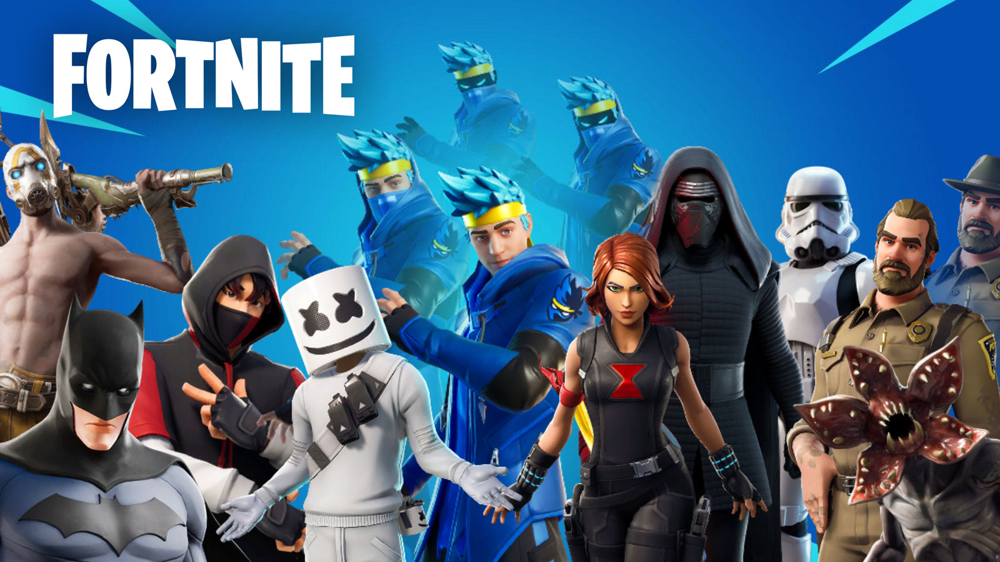
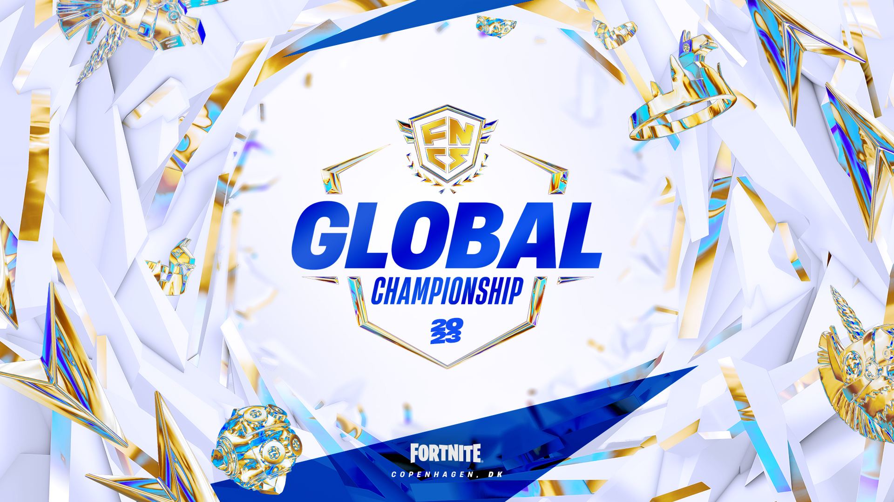

The Fortnite Community: A Global Phenomenon
The Fortnite community is a vibrant and diverse group of players, creators, and fans from around the world. Since its launch in 2017, Fortnite has not only become one of the most popular games but has also fostered a rich culture that extends beyond the battlefield. From casual players to competitive esports teams, the community plays a vital role in shaping the game and its ongoing evolution.
Online Platforms and Social Media
The Fortnite community thrives on various online platforms, where players share experiences, strategies, and creative content. Key platforms include:
- YouTube: Home to countless Fortnite content creators who produce gameplay videos, tutorials, and entertaining streams. From pro players to casual gamers, YouTube is a hub for Fortnite content.
- Twitch: A live-streaming platform where players showcase their skills in real-time. Many popular streamers have built large followings by sharing their Fortnite gameplay, engaging with fans, and participating in events.
- Twitter and Reddit: These platforms are hotspots for community discussions, news, and memes. Players share updates, leaks, and personal achievements, fostering a lively dialogue about the game.
Creative Modes and Player Innovations
Fortnite’s Creative mode empowers players to build and share their own maps and game modes. This has led to a wealth of user-generated content, including:
- Custom Games: Players can design unique experiences ranging from mini-games to complex challenges that can be played with friends or the broader community.
- Creative Showcases: Many players showcase their builds on social media, earning recognition for their creativity and ingenuity. These creations often inspire others and contribute to the ever-expanding Fortnite universe.
Competitive Scene
The competitive Fortnite scene is robust, with numerous tournaments and events hosted both online and offline. Key aspects include:
- Fortnite Championship Series (FNCS): A premier tournament series where top players compete for significant cash prizes and glory. FNCS events attract viewers from around the globe, highlighting the skill and strategy of top competitors.
- Community Tournaments: Many players organize local or online tournaments, creating opportunities for gamers of all skill levels to compete and showcase their abilities.
Community Events and Collaborations
Epic Games regularly engages the community through in-game events, challenges, and collaborations with popular franchises. These events foster excitement and encourage players to participate together, strengthening community bonds. Notable collaborations have included events with Marvel, Star Wars, and music festivals, bringing unique content and experiences to the game.
Inclusivity and Support
The Fortnite community prides itself on inclusivity and support. Many players emphasize a positive gaming environment, offering help to newcomers and encouraging friendly competition. Initiatives to combat toxicity in gaming, along with community-led efforts to promote kindness and respect, are essential to maintaining a welcoming atmosphere.
Conclusion
The Fortnite community is a thriving ecosystem that brings together players of all backgrounds and skill levels. From sharing strategies and creative builds to competing in high-stakes tournaments, the community enhances the Fortnite experience. As the game continues to evolve, the passion and creativity of its players will undoubtedly shape its future. Join the community today and be part of the action!
